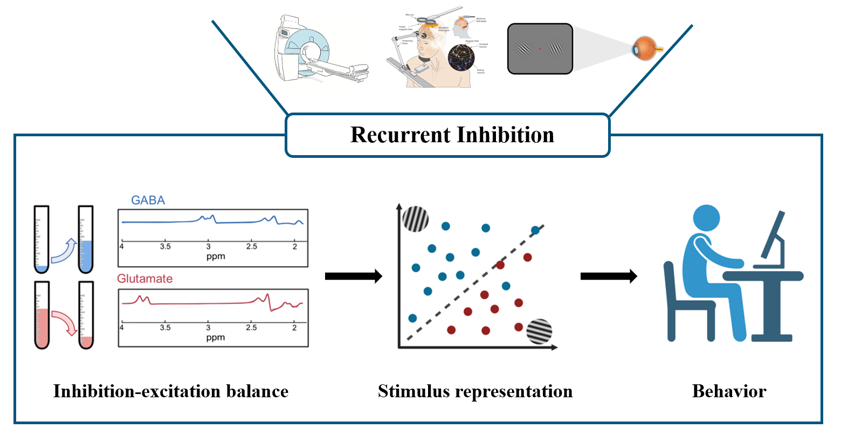

Learning

The idea that the brain solves complex tasks by forming mental templates—that is, internal representations of key information relevant for behaviour—has attracted the attention of psychologists and neuroscientist since William James. Training has been suggested to support the brain’s ability to refine these templates and optimize perceptual decisions. Yet, exactly how the brain achieves this remains debated; we still lack a comprehensive account of the experience-dependent plasticity mechanisms that support adaptive decision making.
We propose recurrent inhibition: an integrative brain plasticity mechanism for improving perceptual decisions. We capitalise on state-of-the-art ultra-high-field (7T) MRI to introduce a multimodal brain imaging approach, combining fMRI at submillimetre resolution with magnetic resonance spectroscopy to investigate interactions between functional and neurochemical plasticity mechanisms. Our results demonstrate that training on a challenging visual discrimination task alters GABAergic inhibition in visual cortex and enhances the discriminability of feature (i.e., orientation) representations in superficial V1 layers. Importantly, learning-dependent changes in GABAergic inhibition drive plasticity in superficial—rather than middle or deeper—layers in visual cortex, that are linked to recurrent—rather than input—processing. Taken together, our results propose that GABAergic inhibition drives improved perceptual decisions by strengthening task-relevant representations through recurrent processing in visual cortex.